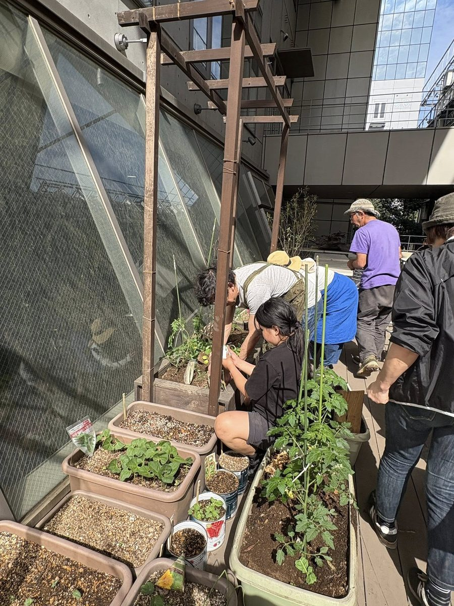

ape cucina naturale
アーペ（ape cucina naturale）は、東京大学駒場キャンパス内にある、食と自然循環を体験するオーガニックレストランです。
自然栽培や有機農家とのつながりを大切に、あらゆる食制限の方に対応しています。
今年からレストランに併設するかたちで、みんなが集えて、育て、食べられる"コミュニティガーデンテラス"づくりがスタート。キャンパス内の落ち葉や廃材、自生する植物などを活かしながら、循環する仕組みを一から作っています。

「感じる・摘む・つくる・味わう ― アーペのテラスガーデン体験」
（デトックスハーブウォーター付き）
開催日：5/16（土）・5/17（日） 11:00〜15:00
定員：30名
①「感じる」テラスとハーブ見学、循環の学び
コミュニティコンポストやハーブや旬の野菜たちを育てて、採れたてをそのままレストランで食べられるfarm to tableの循環と、憩いの場としてのテラスガーデンを見学いただけます。
・テラスガーデン、ビオトープ、ハーブの説明
・土づくりや循環の考え方（パーマカルチャー的視点）
・アーペの食材や取り組み紹介
参加費 無料
②「摘んで味わう」自分で仕上げるapeの規格外野菜の一皿体験
契約農家の規格外野菜を使ったapeの象徴的な一皿（メリメロ仕立て）に、ご自身でテラスのハーブを摘んで仕上げて召し上がっていただきます。
時間 11:00〜14:00 いつでも
参加費 2,200円
③「つくる」プランター作りワークショップ
レストランで使ったオーガニックホールトマト缶の空き缶を使ったプランター作り。キャンパス内の落ち葉を拾いに行き、土を入れお好きな苗を植えてご自宅に持ち帰って育てることができます。作って育てて食べる楽しさを体験いただけます。
小さなお子様から大人までどなたでも楽しめます。
時間 11:00〜、13:00〜の２部制 ※事前予約・当日受付も可
参加費 3,300円 ※こちらには②も含まれています
事前予約：お店まで電話（03-5452-6092）または
Instagram DM（@ape.cucina.naturale.ciaobella）でご連絡ください。
住所
目黒区駒場４－６－１ 東京大学駒場リサーチキャンパス生研An棟
レストラン アーペクッチーナナチュラーレ